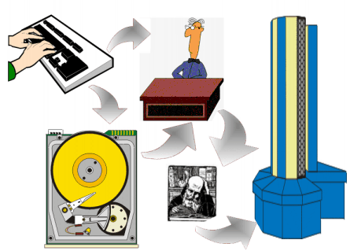

is not saved.
is not saved.
Up till now you've been compiling new definitions into the dictionary by typing them at your terminal. This chapter introduces an alternate method, using disk storage.
Let's begin with some observations that specifically concern the dictionary.
If you've been experimenting with a real computer, you may have discovered some things we haven't mentioned yet. In any case, it's time to mention them.
| Discovery One: You can define the same word more than once in different ways--only the most recent definition will be executed. |
For example, if you have entered:
: GREET ." Hello, I speak Forth. " ; okthen you should get this result:
GREET Hello, I speak Forth. ok
And if you redefine:
: GREET ." Hi there! " ; okyou get the most recent definition:
GREET Hi there! ok
Has the first GREET been erased? No, it's still there, but the most recent GREET is executed because of the search order. The text interpreter always starts at the "back of the dictionary" where the most recent entry is. The definition he finds first is the one you defined last. This is the one he shows to EXECUTE.
We can prove that the old GREET is still there. Try this:
FORGET GREET okand
GREET Hello, I speak Forth. ok(the old GREET again!)
The word FORGET looks up a given word in the dictionary and, in effect, removes it from the dictionary along with anything you may have defined since that word. FORGET, like the interpreter, searches starting from the back; he only removes the most recently defined versions of the word (along with any words that follow). So now when you type GREET at the terminal, the interpreter finds the original GREET.
FORGET is a good word to know; he helps you to weed out your dictionary so it won't overflow. (The dictionary takes up memory space, so as with any other use of memory, you want to conserve it.)
Some Forths do not have FORGET. In that case you need to plan the forgetting in advance, e.g.:
MARKER -workdefines the null definition -work to mark the current system state for you. When you execute -work at some later time, the system state is restored to that in effect when -work was defined. In particular, all words defined after the marker word -work are completely removed from the dictionary.
| Discovery Two: When you enter definitions from the terminal (as you have been doing), your
source text is not saved.
|
Only the compiled form of your definition is saved in the dictionary. So what if you want to make
a minor change to a word already defined? This is where a "text editor" comes in. With this editor,
you can save your source text and modify it if you want to. In this day and age we can assume that
everyone has access to a text editor. The documentation of your Forth system should discuss the
procedures to easily use your favorite text editor from within the Forth environment. (On a modern
OS, double-click the file you want to edit. After finishing your editing business, type INCLUDE
on the Forth commandline. Add at least one trailing space, then drag your file in the Forth
window and drop it on the commandline. Type  .)
.)
A text editor stores your source text on disk. So we'd better introduce the disk and the way the Forth system uses it.
All Forth systems use disk memory. Even though disk memory is not absolutely necessary for a Forth system, it's difficult to imagine Forth without it.
To understand what disk memory does, compare it with computer memory (RAM). The difference is analogous to the difference between a filing cabinet and a rolling card-index.
So far you've been using computer memory, which is like the card index. The computer can access this memory almost instantaneously, so programs that are stored in RAM can run very fast. Unfortunately, this kind of memory is sometimes very limited (e.g. in embedded controllers) and relatively expensive.
On the other hand, the disk is called a "bulk memory" device, because, like a filing cabinet, it can store a lot of information at a much cheaper price per unit of information than the memory inside the computer.
Both kinds of memory can be written to and read from.
The compiler compiles all dictionary entries into computer memory so that the definitions will be quickly accessible. The perfect place to store source text, however, is on the disk, which is what Forth does. You can either send source text directly from the keyboard to the interpreter (as you have been doing), or you can save your source text on the disk and then later read it off the disk and send it to the text interpreter.
|  |
Disk memory is divided into units called "blocks." Each block holds 1,024 characters of source text or binary data, traditionally organized as 16 lines of 64 characters. The ANS Forth standard does not specify how many blocks there are. The documentation of your Forth system should tell you this.
With current Forths, disk memory resides in OS files. There are ways to attach specific OS files to the "Forth disk." Due to the special 16 by 64 format of Forth blocks, OS utilities consider them as binary data and cannot generally print, list, filter or edit them. Forth systems have standardized facilities to handle some of these tasks by themselves.
Assuming you are using iForth, then the following should instruct disk memory to come from some file:
USE blocks.gfb ok
To list a block, simply type the block-number and the word LIST, as in:
1 LIST 0 1 ( Large letter F MHX 21:29 07/01/89) 2 3 : STAR [CHAR] * EMIT ; 4 : STARS 0 DO STAR LOOP ; 5 : MARGIN CR 30 SPACES ; 6 : BLIP MARGIN STAR ; 7 : BAR MARGIN 5 STARS ; 8 : F BAR BLIP BAR BLIP BLIP CR ; 9 10 11 12 13 14 15 ok
The above is what a block looks like when it's listed on your terminal.
To give you a better idea of how all of this could be used, we'll assume that block 1 contains the definitions shown above. Except for line 1, everything looks familiar: these are the definitions you used to print a large letter "F" at your terminal.
Now if you were to type:
1 LOAD Fyou would send block 1 to the input stream and then on to the text interpreter. The text interpreter does not care where his text comes from. Recognizing the colons, he will have all the definitions compiled, and then will execute the new word F.
Now for the unfinished business: line 1. The words inside the parentheses are for humans only; they are neither compiled nor executed. The word ( (left parenthesis) tells the text interpreter to skip all the following text up to the terminating right parenthesis. Because ( is a word, it must be set off with a space. The closing parenthesis is not a word, it is simply a character that is looked for by (, called a delimiter. (Recall that the delimiter for ." is the closing quote mark.)
To summarize, the three ANS Forth commands we've learned so far that concern disk blocks are:
| LIST | ( n -- ) | Lists a disk block. | 
|
| LOAD | ( n -- ) | Loads a disk block (compiles or executes). |
|
| ( xxx) | ( -- ) | Causes the string xxx to be ignored by the text interpreter. The character ) is the delimiter. |
|
We have discussed blocks mainly because of historical reasons. Blocks are hardly ever used for source text storage any more. The preferred way to handle source is in standard text files, using the word INCLUDE to load them:
INCLUDE blocks.forth okThe main advantage is that
blocks.forth can be edited and
managed with standard text file utilities.
However, now we're at it, we'll mention a few other words to access and modify blocks on disk.
The basic word that brings a block in from the disk, after first finding an available buffer and storing its contents on disk if necessary, is BLOCK. For instance, if you say
1 BLOCKthe system will copy block 1 of the currently open file into one of the system buffers. BLOCK also leaves on the stack the address of the beginning of the buffer (1024 bytes, remember) that it used. The contents of this buffer are guaranteed to stay valid until you execute a word from the set of procedures with "multitasking impact," like EMIT or TYPE. If you at any time modify the buffer contents and then execute the word UPDATE, Forth will remember to first write the block back to disk when it needs to reuse the buffer. If, for some reason, you execute UPDATE and then decide that you don't want to have the blocks rewritten after all, use EMPTY-BUFFERS to invalidate them. This works because Forth does not immediately write the disk after you use UPDATE. To force writing out the buffers right now, use the word FLUSH.
Here's a list of the Forth words we've covered in this chapter:
| USE xxx | ( -- ) | Designate OS text file xxx as the "Forth disk." |
| LIST | ( n -- ) | Lists a disk block. |
| LOAD | ( n -- ) | Loads a disk block (compiles or executes). |
| ( xxx) | ( -- ) | Causes the string xxx to be ignored by the text interpreter. The character ) is the delimiter. |
| UPDATE | ( -- ) | Marks the most recently referenced block as modified. The block will later be automatically transferred to mass storage if its buffer is needed to store a different block or if FLUSH is executed. |
| EMPTY-BUFFERS | ( -- ) | Marks all block buffers as empty without necessarily affecting their actual contents. Updated blocks are not written to mass storage. |
| BLOCK | ( u -- addr ) | Leaves the address of the first byte in block u. If the block is not already in memory, it is transferred from mass storage into whichever memory buffer has been least recently accessed. If the block occupying that buffer has been updated (i.e., modified), it is rewritten onto mass storage before block u is read into the buffer. |
| INCLUDE xxx | ( -- ) | Load the text file xxx (compiles or executes). |
| FORGET xxx | ( -- ) | Forgets all definitions back to and including xxx. |
| MARKER xxx | ( -- ) | Creates a word xxx which, when executed, restores the dictionary to the state it had just prior to the definition of xxx. In particular, remove xxx and all subsequent word definitions. |
| | |
|---|---|
| Block | in Forth, a division of disk memory containing up to 1024 characters of source text. |
| Buffer | a temporary storage area for data. |
| Null definition | a definition that does nothing, written in the form:: NAME ;that is, a name only will be compiled into the dictionary. A null definition serves as a "bookmark" in the dictionary, for FORGET to find. |
| Pointer | a location in memory where a number can be stored (or changed) as a reference to something else. |
| Source text | in Forth, the written-out form of a definition or definitions in English-like words and punctuation, as opposed to the compiled form that is entered into the dictionary. |
| | |